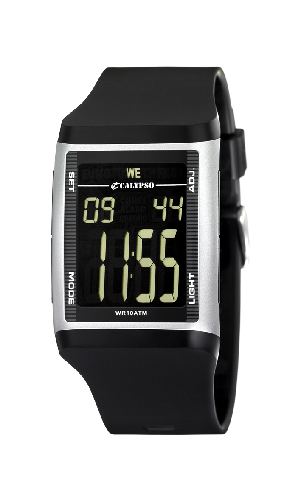

Blog
About me

Past Articles
- Mininterno.net - Psicologia - Quiz Concorsi Pubblici
Il Dipartimento di Psicologia, con sede nel quartiere romano di San Lorenzo, è stato istituito dall'Università di Roma La Sapienza nel 1983, e fa parte dal 2010 della Facoltà di Medicina e Psicologia. Da sempre caratterizzato dall'internazionalizzazione delle attività di ricerca e dall'eccellenza della produttività scientifica, Il ... - Laurea in Psicologia Unimore e Unipr - Laurea Triennale in ...
Benvenuti al Corso di studio interateneo in Scienze e Tecniche Psicologiche. Il Corso di studio triennale in Scienze e Tecniche Psicologiche è una laurea Interateneo tra l'Università di Modena e Reggio Emilia e l'Università di Parma, due tra i più antichi e prestigiosi Atenei italiani ed europei. Le attività didattiche si svolgono nelle sedi di Reggio Emilia e di Parma utilizzando una ... - Dipartimento di Formazione, Lingue, Intercultura ...
Codice corso: 30027; Codice prova: 05429; Facoltà: Medicina e Psicologia; Dipartimento: PSICOLOGIA DINAMICA E CLINICA; Durata: 3 anni; Classe di Laurea: L-24 - Laurea in Psicologia, Facoltà Psicologia a Roma e On line
Dipartimento di Psicologia Dinamica e Clinica. Il Dipartimento di Psicologia Dinamica, Clinica e Salute n.42 della “Sapienza” Universita’ di Roma è stato istituito con D.R. del 22/ottobre 2001 ed attivato con D.R. dell’11/marzo 2002. - Home | Dipartimento di Psicologia - Sapienza, Università ...
Dal 1° Novembre 2010, le Facoltà di Psicologia I e II e la Seconda Facoltà di Medicina e Chirurgia hanno dato vita alla nuova Facoltà di Medicina e Psicologia. Nel rispetto dell’identità e dell’autonomia delle due culture, il punto d’incontro è rappresentato dal comune obiettivo che è la felice e completa realizzazione - Dipartimento di Psicologia e Scienze Cognitive
Magistrale in Psicologia Applicata ai Contesti Istituzionali (fino all'a.a. 2017/2018) Corsi di studio internazionali - Double Degree Offerta formativa anni precedenti - Dipartimento di Neuroscienze, Psicologia, Area del Farmaco ...
DIPARTIMENTO DI PSICOLOGIA GENERALE. Didattica. Ricerca. Dipartimento. Progetto Dipartimenti di Eccellenza I Dipartimenti di eccellenza rappresentano un intervento innovativo e di forte sostegno finanziario. L'intervento ha l'obiettivo di individuare e finanziare, con cadenza quinquennale e nell'ambito delle 14 aree CUN, i migliori 180 ... - Dipartimento di Psicologia - Home
Mostra sulla Psicologia dell’arte e l’opera artistica di Alberto Argenton Nel maggio del 1919 il Prof. Vittorio Benussi svolgeva a Padova la prima lezione accademica di Psicologia. Il 7 dicembre 2019, si è tenuta una giornata di studi dedicata ai Cento anni di Psicologia a Padova e in Italia, curata da Andrea Bobbio (FISPPA), Giovanni ... - Facoltà di psicologia
Letterature e Psicologia. Toscana in zona rossa da lunedì 29 marzo. Indicazioni per le attività universitarie. Bando di selezione pubblica. Anno Dantesco – Iniziative FORLILPSI. Calendario Consigli di Dipartimento FORLILPSI anno 2021. Altre Notizie Eventi. - SippOnline
Attività a distanza a cura del team di psicologia e psicoterapia dell'ODFLab. Le prime laureate in Data Science a Trento Dalla formazione umanistica alla passione per il giornalismo digitale, all’interesse per scienza e innovazione: su UniTrentoMag. CORSI DI STUDIO. Corsi di laurea.
Menu
- Mininterno.net - Psicologia - Quiz Concorsi Pubblici
- Laurea in Psicologia Unimore e Unipr - Laurea Triennale in ...
- Dipartimento di Formazione, Lingue, Intercultura ...
- Laurea in Psicologia, Facoltà Psicologia a Roma e On line
- Home | Dipartimento di Psicologia - Sapienza, Università ...
- Dipartimento di Psicologia e Scienze Cognitive
- Dipartimento di Neuroscienze, Psicologia, Area del Farmaco ...
- Dipartimento di Psicologia - Home
- Facoltà di psicologia
- SippOnline
SippOnline

SippOnline
× Home Page Chi Siamo La Società Chi Siamo Corsi Online Corsi in Presenza Pubblicazioni Info e Contatti Informazioni Modalità di iscrizione Tutela della privacy Cookie Policy Docenti Francesco Tramonti Gianfranco Brevetto Bianca Rita Berti Dario Capone Simona Dosi Martina Palavisini Monica Zoccoli Remo Fracassini Carmen Cocco Elisa Castaldi Maurizio Parente Luca Grandi Monica Pratelli Sandra Matteoli Pasquale Vaira Maria Cristina Valle Domenico Pratelli Filippo Gasperini Silvia Taccini Grazia Molesti Angela Falchetti Agenzia Formativa Società Italiana di Psicologia e Pedagogia Vai ai contenuti Seguici su Facebook Fb Leggi il nostro articolo: VORREI SOLAMENTE INSEGNARE SENZA VALUTARE MAILa valutazione del profitto nella scuola
di Maurizio Parente
LEGGI Leggi il nostro articolo: E’ MIGLIORATO… MA HA SBAGLIATO LE VERIFICHE…
di Sandra Matteoli LEGGI Leggi il nostro articolo: LA VALUTAZIONE NELLA SCUOLA ITALIANA: UN CAMMINO IN SALITA
Di Giacomo Dallari LEGGI Leggi il nostro articolo: NUOVE MODALITÀ DI SCRUTINIO NELLA SCUOLA: LA PAGELLA ELETTRONICA
di Elisabetta Formaggi LEGGI S ei un docente di ruolo? Accedi per poter utilizzare i 500 euro per l'aggiornamento professionale
I NOSTRI DOCENTI
Registro Specialisti in Pedagogia Clinica
Registro Diplomati in Counseling Professessionale Sistemico
Seminari e Convegni
Contributi e Borse di Studio
Speciale Insegnanti
Le nostre NewsletterConsultale Bonus Riduzioni - CFU Bonus Spesa per i docenti; Riduzione costi; Crediti Formativi; CFU I Nostri Libri in Vendita Acquistalo direttamente on-line, clicca qui
Newsletter
Iscriviti alla Newsletter La nostra rivista www.exagere.it
Posted by Jack  Read more
Read more  Comments (15)
Comments (15)  2021.04.14 23:47
2021.04.14 23:47